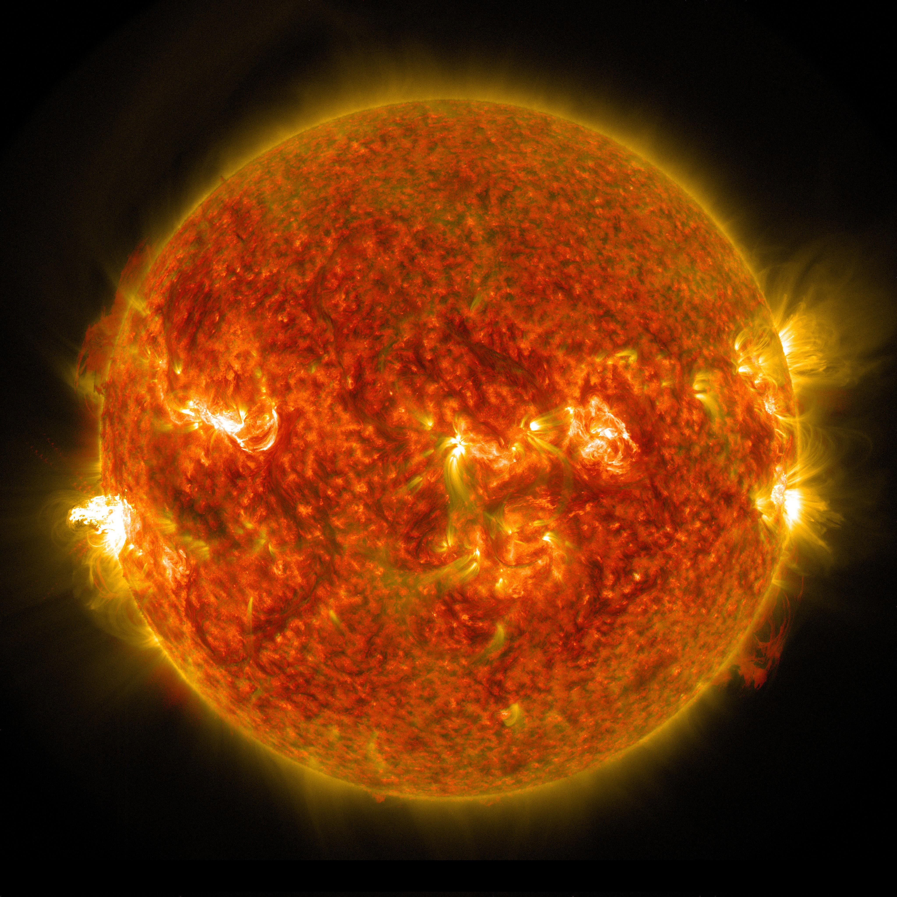

Matahari
Dilansir dari Wikipedia, Matahari atau Surya adalah bintang di pusat tata surya. Bentuknya nyaris bulat dan terdiri dari plasma panas bercampur medan magnet. Diameternya sekitar 1.392.684 km, kira-kira 109 kali diameter Bumi, dan massanya (sekitar 2×1030 kilogram, 330.000 kali massa Bumi) mewakili kurang lebih 99,86 % massa total tata surya. Matahari merupakan benda langit terbesar di galaksi Bima Sakti yang besarnya bahkan 10 kali planet terbesar tata surya, Jupiter.
Secara kimiawi, sekitar tiga perempat massa matahari terdiri dari hidrogen, sedangkan sisanya didominasi helium. Sisa massa tersebut (1,69%, setara dengan 5.629 kali massa Bumi) terdiri dari elemen-elemen berat seperti oksigen, karbon, neon, dan besi. Matahari terbentuk sekitar 4,6 miliar tahun yang lalu akibat peluruhan gravitasi suatu wilayah di dalam sebuah awan molekul besar. Sebagian besar materi berkumpul di tengah, sementara sisanya memipih menjadi cakram beredar yang kelak menjadi tata surya. Massa pusatnya semakin panas dan padat dan akhirnya memulai fusi termonuklir di intinya. Diduga bahwa hampir semua bintang lain terbentuk dengan proses serupa. Klasifikasi bintang matahari, berdasarkan kelas spektrumnya, adalah bintang deret utama G (G2V) dan sering digolongkan sebagai katai kuning karena radiasi tampaknya lebih intens dalam porsi spektrum kuning-merah. Meski warnanya putih, dari permukaan Bumi, matahari tampak kuning dikarenakan pembauran cahaya biru di atmosfer. Menurut label kelas spektrum,G2 menandakan suhu permukaannya sekitar 5778 K (5505 °C) dan V menandakan bahwa matahari, layaknya bintang-bintang lain, merupakan bintang deret utama, sehingga energinya diciptakan oleh fusi nuklir nukleus hidrogen ke dalam helium. Dalam intinya, matahari memfusi 620 juta ton metrik hidrogen setiap detik. Berdasarkan perkiraan seluruh hidrogen yang ada di dalam matahari akan habis dalam sekitar 4,5 miliar tahun ke depan, dan matahari akan mati menjadi katai putih.
Ciri Khas Matahari
Primonensa(Lidah Api Matahari)
Prominensa, yang disebut pula lidah api Matahari, adalah bagian Matahari yang menyerupai lidah api sangat besar dan terang, yang mencuat keluar dari bagian permukaan serta sering kali berbentuk loop (putaran). Prominensa disebut pula filamen Matahari, karena meski julurannya sangat terang bila dilihat di angkasa yang gelap, namun tidak lebih terang dari keseluruhan Matahari. Prominensa hanya dapat dilihat dari Bumi dengan bantuan teleskop. Prominensa terbesar yang pernah ditangkap oleh SOHO (Solar and Heliospheric Observatory) diperkirakan berukuran panjang 350 ribu kilometer.
Sama seperti korona, prominensa terbentuk dari plasma, namun memiliki suhu yang lebih dingin. Prominensa berisi materi dengan massa mencapai 100 miliar kilogram. Prominensa terjadi di lapisan fotosfer Matahari, dan bergerak keluar menuju korona Matahari. Plasma prominensa bergerak di sepanjang medan magnet Matahari, dan erupsi dapat terjadi ketika struktur prominesa menjadi tidak stabil sehingga akan pecah dan mengeluarkan plasmanya.
Bintik Matahari

Bintik matahari adalah area yang memiliki medan magnet yang kuat. Medan magnet di bintik Matahari ini bahkan bisa mencapai 2.500 kali lebih kuat dari Bumi, jauh lebih tinggi daripada di tempat lain di Matahari. Karena medan magnet yang kuat, tekanan magnet meningkat sedangkan tekanan atmosfir sekitarnya menurun. Hal ini menurunkan suhu relatif terhadap lingkungannya karena medan magnet yang terkonsentrasi menghambat aliran gas baru yang panas dari interior Matahari ke permukaan. Interaksi magnetik yang terjadi di bintik Mathaari menyebabkan terlepasnya sejumlah besar energi lewat ledakan Matahari dan badai besar yang dikenal sebagai lontaran massa korona yang terjadi di bintik Matahari.
Angin Matahari
Angin matahari terbentuk dari aliran konstan dari partikel-partikel yang dikeluarkan oleh bagian atas atmosfer matahari yang bergerak ke seluruh tata surya. Partikel-partikel tersebut memiliki energi yang tinggi. Namun, proses pergerakan ke luar medan gravitasi matahari pada kecepatan yang begitu tinggi belum dimengerti secara sempurna. Kecepatan angin surya terbagi dua, yaitu angin cepat yang mencapai 400 km/s dan angin cepat yang mencapai lebih dari 500 km/s. Kecepatan ini juga bertambah secara eksponensial seiring jaraknya dari matahari. Angin matahari yang umum terjadi memiliki kecepatan 750 km/s dan berasal dari lubang korona di atmosfer matahari.
Angin matahari terbentuk dari aliran konstan dari partikel-partikel yang dikeluarkan oleh bagian atas atmosfer matahari yang bergerak ke seluruh tata surya.[100] Partikel-partikel tersebut memiliki energi yang tinggi. Namun, proses pergerakan ke luar medan gravitasi matahari pada kecepatan yang begitu tinggi belum dimengerti secara sempurna. Kecepatan angin surya terbagi dua, yaitu angin cepat yang mencapai 400 km/s dan angin cepat yang mencapai lebih dari 500 km/s. Kecepatan ini juga bertambah secara eksponensial seiring jaraknya dari matahari. Angin matahari yang umum terjadi memiliki kecepatan 750 km/s dan berasal dari lubang korona di atmosfer matahari.
Badai Matahari
Badai matahari terjadi ketika ada pelepasan seketika energi magnetik yang terbentuk di atmosfer matahari. Plasma matahari yang meningkat suhunya hingga jutaan Kelvin beserta partikel-partikel lainnya berakselerasi mendekati kecepatan cahaya. Total energi yang dilepaskan setara dengan jutaan bom hidrogen berukuran 100 megaton. Jumlah dan kekuatan badai matahari bervariasi. Ketika matahari aktif dan memiliki banyak bintik, badai matahari lebih sering terjadi. Badai matahari sering kali terjadi bersamaan dengan luapan massa korona. Badai matahari memberikan risiko radiasi yang sangat besar terhadap satelit, pesawat ulang alik, astronaut, dan terutama sistem telekomunikasi Bumi. Badai matahari yang pertama kali tercatat dalam pustaka astronomi adalah pada tanggal 1 September 1859. Dua peneliti, Richard C. Carrington dan Richard Hodgson yang sedang mengobservasi bintik matahari melalui teleskop di tempat terpisah, mengamati badai matahari yang terlihat sebagai cahaya putih besar di sekeliling matahari. Kejadian ini disebut Carrington Event dan menyebabkan lumpuhnya jaringan telegraf transatlantik antara Amerika dan Eropa.